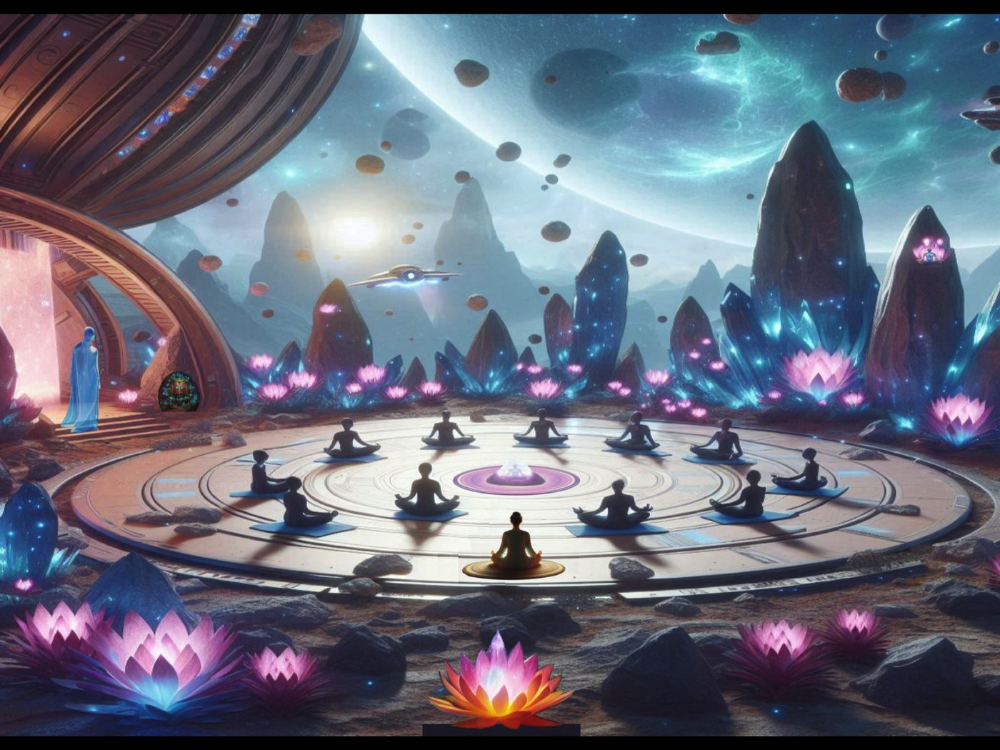

The Greenfield encounter
Crops and Cosmos
By R. Diaz

Once upon a time, nestled in the serene countryside, there was a quaint little farm owned by the Greenfield family. Mr. and Mrs. Greenfield, along with their two children, Lily and Jack, tended to their crops and animals with love and care. Little did they know, their simple farm was about to become the stage for an extraordinary encounter. One clear summer night, as the stars twinkled above, a shimmering spaceship descended gracefully onto the Greenfield's fields. Out stepped a group of the most adorable aliens you could imagine. They were small and round with big, curious eyes that sparkled with intelligence. The leader of the group, a bubbly alien named Zippy, stepped forward with a friendly wave. "Hello, Earthlings!" Zippy chirped, his voice tinged with excitement. "We come in peace to learn from your ways." The Greenfields, initially startled but quickly intrigued, welcomed the aliens with open arms. They showed them around the farm, introducing them to their crops, their animals, and the simple joys of farm life. The aliens, fascinated by the organic beauty of the farm, eagerly soaked up every detail. As the days passed, the aliens shared their advanced technology with the Greenfields, demonstrating gadgets that seemed straight out of a science fiction novel. They showed them holographic projectors, energy-efficient tools, and even a device that translated animal sounds into human speech. In return, the Greenfields taught the aliens the art of planting seeds, tending to animals, and the satisfaction of hard work. They showed them how to churn butter, gather eggs, and revel in the beauty of a starlit sky. But amidst the laughter and learning, one of the aliens, a thoughtful creature named Spark, noticed something remarkable. Not all humans were fixated on high-tech gadgets or consumed by the desire for more. The Greenfields lived simply, yet joyfully, embracing the beauty of nature and the warmth of family. "Friends," Spark addressed the group one evening, "we've been mistaken. Not all humans are driven by the pursuit of technology. The Greenfields have shown us that there is wisdom in simplicity, and happiness in the quiet moments of life." Moved by Spark's revelation, the other aliens nodded in agreement. They realized that true progress wasn't measured by the sophistication of gadgets, but by the depth of connection and understanding between beings. And so, with hearts full of gratitude and newfound wisdom, the aliens bid farewell to their new friends, promising to cherish the lessons learned on the Greenfield farm forever. As their spaceship soared back into the vast expanse of space, the Greenfields waved goodbye, their spirits lifted by the magic of an unexpected encounter and the bonds forged across the stars.